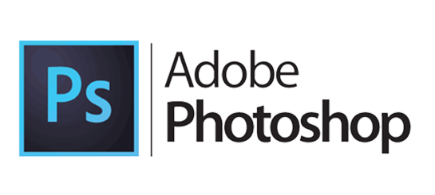
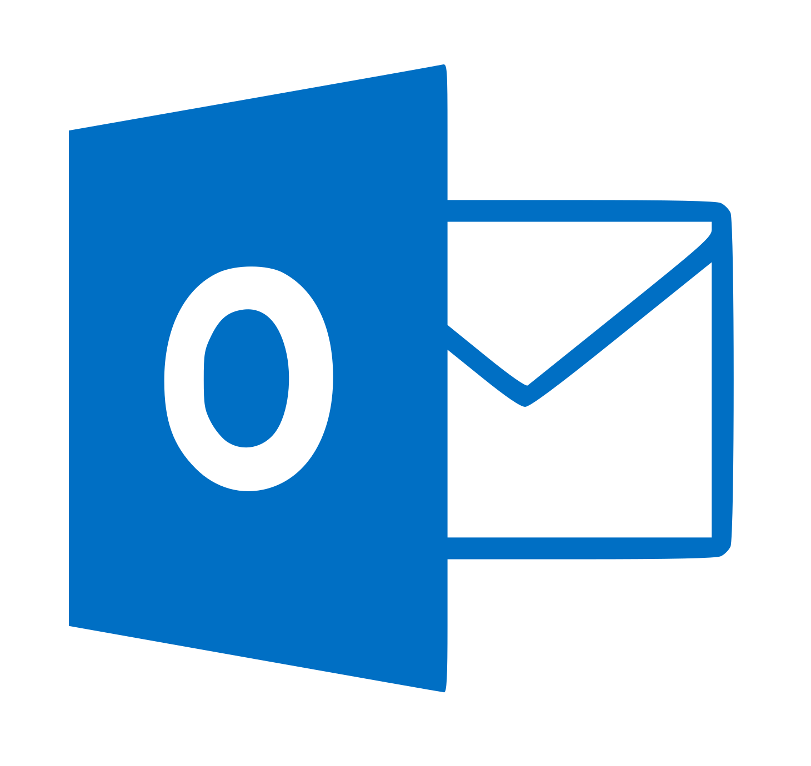

Den digitale samtid



Hva finnes det av tjenester som er vanlige i en digital samtid?
- Mail
- Nettbank
- Sosiale medier
- Facebook, Twitter, LinkedIn.
- Datingsider (Tinder)
- Bildedeling (Instagram, Pinterest, Flickr, Snapchat)
- Streaming av musikk og video (Spotify, Youtube, Netflix, HBO)
- Webbasert grensesnitt til offentlige tjenester
- Redigeringsprogrammer for digitale bilder og videoer (Adobe Photoshop)
- Kontorverktøy (Dokumentredigering)
- Nettbutikker (Varer og tjenester)
- Nettbaserte spill (For eks. Spill fra Y8)
- Skytjenester
Hvilke tjenester bruker du i din digitale samtid (ditt digitale liv)?
Jeg bruker mye av sosiale medier som Facebook, Instagram, Snapchat for å
chatte med venner eller se på bilder.
Videostreaming-tjenester som Youtube og Netflix
bruker jeg når jeg vil se på videoer eller filmer.
Om jeg vil høre på musikk så streamer jeg sangene på Spotify.
På skolen bruker jeg mail for å snakke med lærere
og skytjenesten OneDrive når jeg vil lagre notater
og oppgaver. Jeg bruker også dokumentredigeringsprogrammer
som "Word" eller "NotePad++" når jeg får oppgaver fra
lærere eller vil notere noe fra timene.
Hvordan påvirker det kommunikasjonen at vi er del av et digitalt nettverk døgnet rundt?
Nå foregår for det meste av all kommunikasjonen gjennom nettet.
Digitalt kommunikasjon er rask og effektivt og man har tilgang
til det døgnet rundt. Nå trengs det ikke å møte noen for å spre
viktig informasjon.
Hvis vi kommuniserer digitalt, så er vi egentlig bare foran
små eller store skjermer fremfor å møte ansikt til ansikt.
På nettet er ikke mange følelser som blir vist hos den andre
personen på nettet i forhold til en direkte samtale selv om det
blir vist emojis. å le med noen digitalt, gir ikke den samme
følelsen som når man ler med noen rett ved siden av deg.
Hvis man bor langt unna, så er digital kommunikasjon selvfølgelig
en fordel med å kommunisere via nettet.
Hvordan kommuniserer du med venner, familie, arbeidsgiver etc. i det moderne samfunn?
I hverdagslivet mitt bruker jeg mye av sosiale medier
for å snakke med venner og familie. Sosiale medier som
Facebook Messenger og Snapchat er det jeg bruker normalt
til å skrive tekstmeldinger eller ringe vennene mine.
Noen ganger bruker jeg det for å snakke med familie og
venner i utlandet sånn at jeg slipper å bruke så mye penger
på taletelefon og SMS.
Taletelefon og SMS bruker jeg bare når det er noe viktig
jeg må si til noen når jeg ikke har internett, siden det
koster å bruke det.
Når det gjelder skole eller jobb så bruker jeg som
oftest mail fordi det er upassende å bruke sosiale medier
for å kontakte skolen eller jobben.